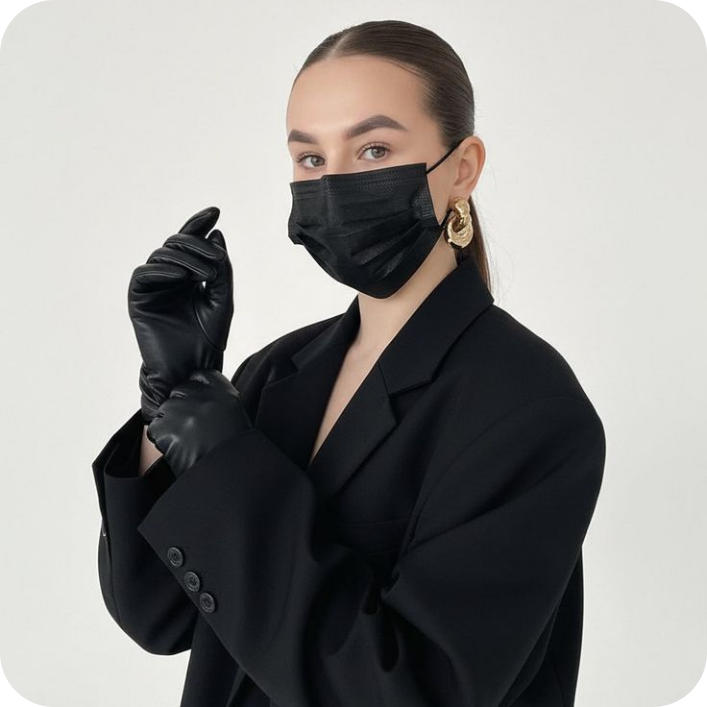

Мария Чайковская
О СЕБЕ: Привет! Я люблю создавать яркие и запоминающиеся
работы и нахожу вдохновение в характере каждого хвостатого
клиента Стремлюсь делать татуировки, которые подчёркивают
индивидуальность и гармонично смотрятся на теле.
Работаю аккуратно и с вниманием к каждой детали.
СТАЖ РАБОТЫ: 5 ЛЕТ
НАПИСАТЬ МНЕ